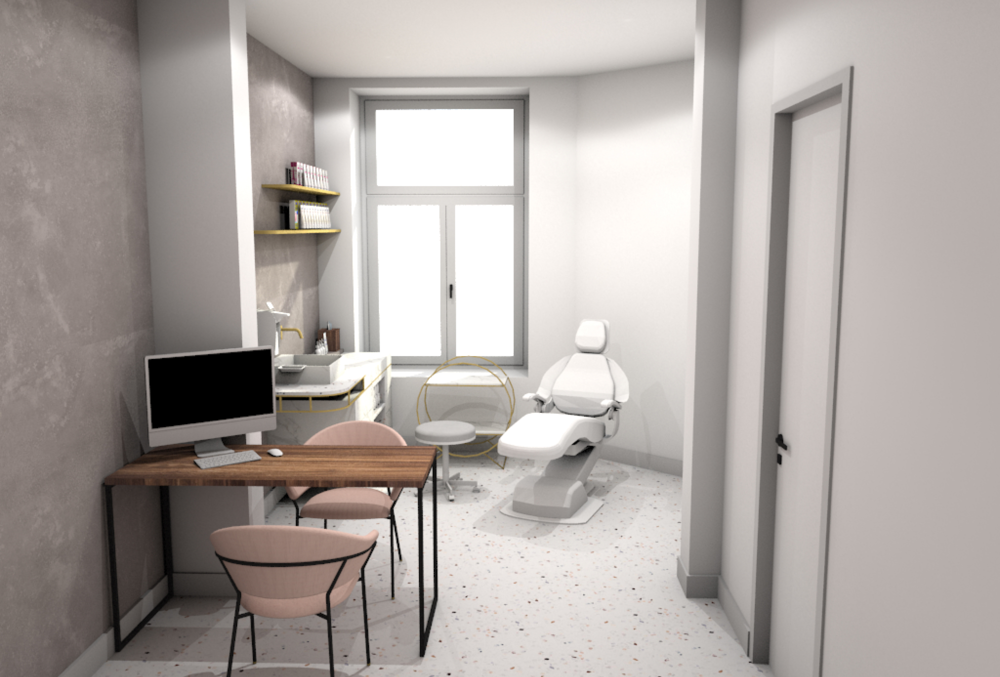
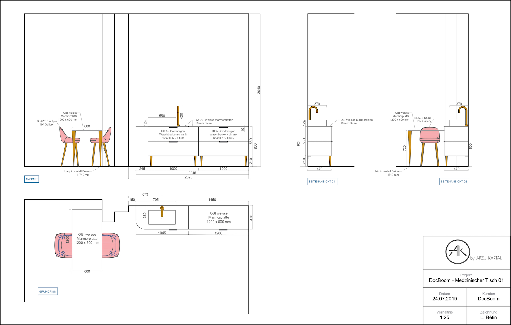
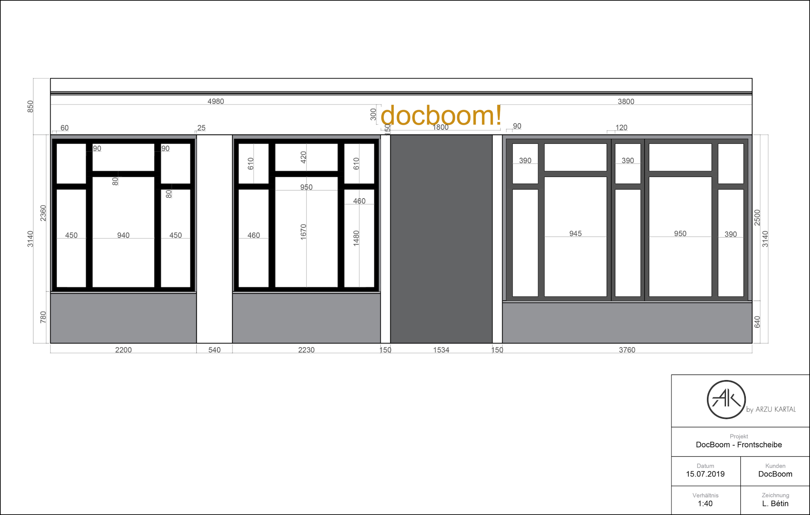
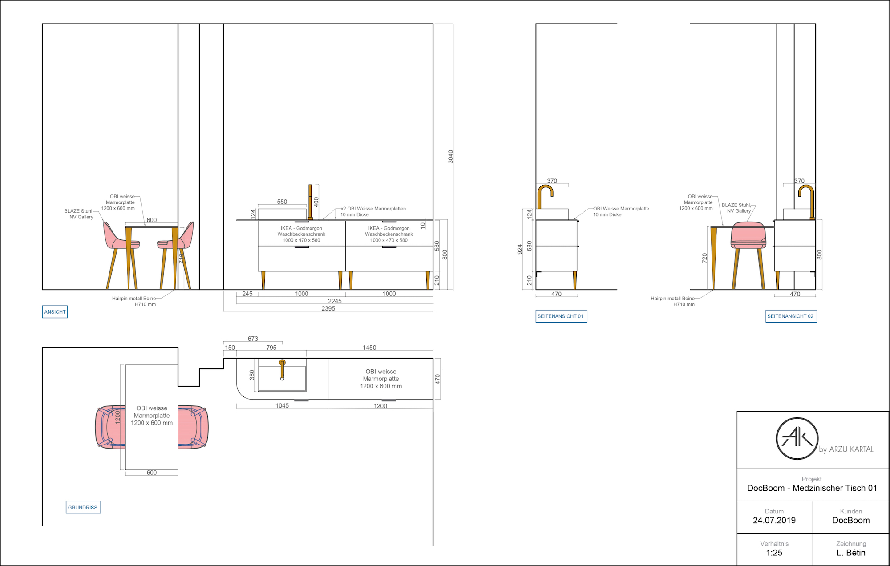
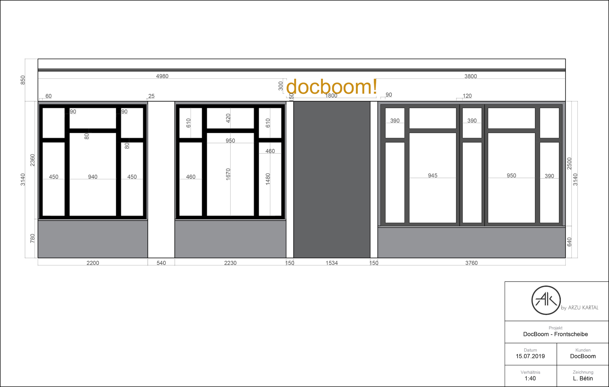
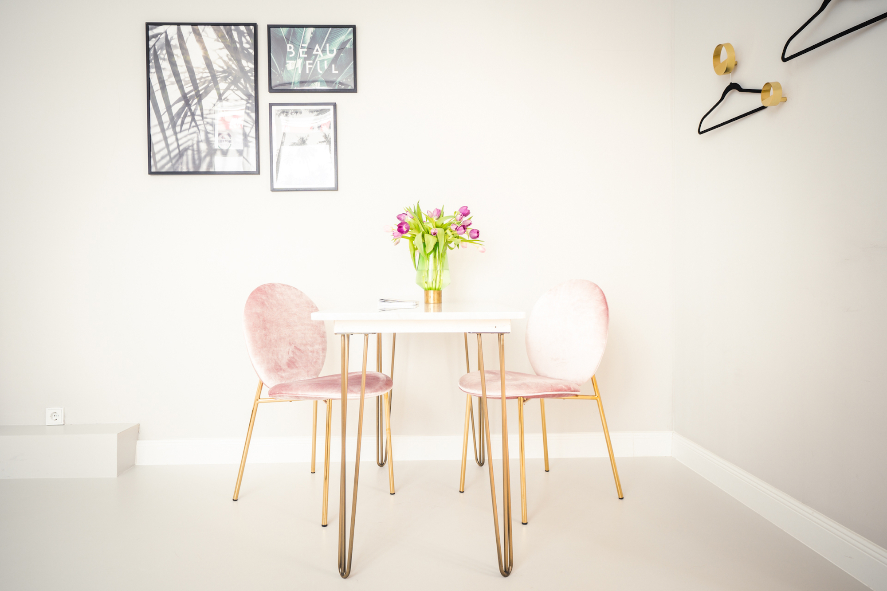

Doc Boom.
Doc Boom was founded by three partners already specialized in plastic surgery and beauty care. They created this company to turn it into a franchise after the completion of the first clinic designed by Arzu Kartal and myself. The customers having a low budget but a wish to create a luxurious atmosphere, I did a lot of back and forth in the project in order to satisfy their requirements.
01. How did I start this project?
After filling in the authorizations to turn the existing space into a clinic and studying the regulations related to spaces dedicated to health (fire standards, floor types, materials to be prohibited), I was able to start doing research to find inspiration and set up a moodboard. The moodboard is a board made up of photos that inspired me and I use it to share my ideas with the clients. For this luxurious atmosphere, I favored materials such as brass, marble and terrazzo. The clients agreed on a pink color chart to bring some pep and flashy, and to catch people’s eyes from the street.
02. How do I conceptualize?
After the clients’ approval, we went to the existing and empty space and took measures. With these measures, I built the layout of the future clinic on my computer (with AutoCAD) and applied the textures and materials (with Photoshop). I worked on the arrangement of the space in order to fit two treatment rooms and to list all the elements that will be needed in the space. I also conceived 3D renders to immerge clients into their future clinic.
Pictures of the existing space.
I created two waiting rooms so every treatment room will have its waiting area. In this way, people can see the same design from outside in the two front windows and understand that it is the same business. Some signage will be placed on the wall between the two doors to explain where is the reception desk and the different treatment rooms. I also designed some bespoke furniture (counter, preparation tables for the doctors, mirrors, coat rack, shelving) with the same materials and colors of my moodboard.
The project wasn’t approved despite the fact that the clients loved it, why?
Despite the fact that the clients loved the design and that I tried to reduce to the maximum the use of brass and marble, it was still too expensive for them and they added a new request to have three treatment rooms instead of two. Moreover, according to the two future doctors, it was too pink for them.
03. New exploration
I explored new ideas and created new layouts and renders. The ones that you will see below are the final ones. I had to find solutions to reduce the production costs, so I tried to find existing furniture as much as possible.
Final plan with the furniture, bespoke furniture, lighting, materials, walls to build and to remove.
Final plan with the furniture, bespoke furniture, lighting, materials, walls to build and to remove.
Rendering of the waiting room.
Rendering of the waiting room.
Rendering of the restroom..
04. What are technical drawing details for?
The technical drawing details serve the carpenter who will produce them. These drawings have all the measures, material types, colors, details on how it is made, how it stands and how to implement them into the space.
 



What was the difficulty of this part?
The clients were still very onto reduce the costs and it went the same way for the production part. I had to find solutions to create technical drawing details of the furniture that will look like how I designed them. I looked for some basics furniture on IKEA, brass feet on Etsy and create a module easy to build for the worker. I had to search for cheaper materials as well.
05. How to inventory the elements needed for the project?
I set up a new management tool that I discovered during my previous internship at DAAA Haus in Malta, it is called a bill of quantities. It is a sheet where all the elements are listed. It is very important to know if something is missing, to take stock of the costs and to keep track of the online order and delivery. This bill of quantities is linked to a design booklet which inventory pictures, names and brands of all these elements. If it is bespoke furniture, the name of the associated drawing is written next to it.

One part of the bill of quantities (BOQ) of Doc Boom.
First page of the design booklet.
Finalization of the project
The furniture production and construction site took around 3 months.
- I visited several times the construction site with Arzu to make sure everything was fine.
- We checked together the colors that we picked before, with the true natural light of the space.
Waiting room.

Treatment room of the left side.